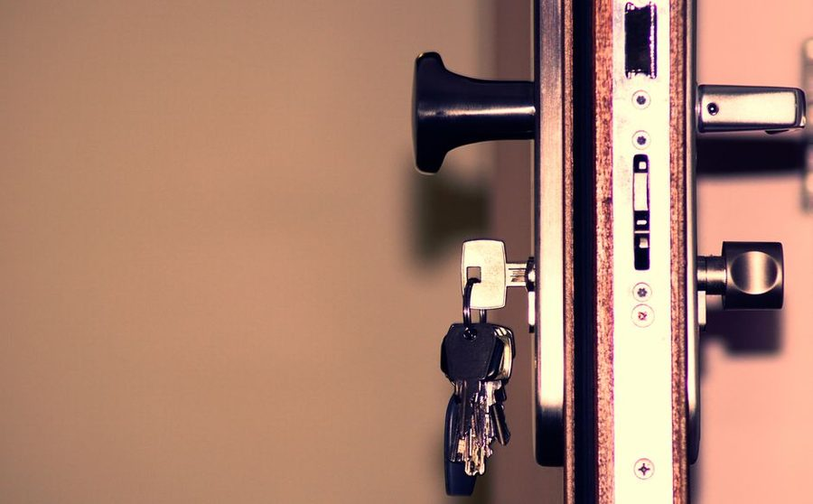

Anotado em 21 de maio · leitura de 5 minutos
Quem passa doze horas fora nao precisa de mais disciplina; precisa de uma rotina desenhada para duas horas, e nao para um dia inteiro imaginario.

A maior parte dos conselhos de organizacao domestica assume alguem em casa durante o dia. Para quem sai as sete da manha e volta as sete da noite, esse modelo nao existe: sobram cerca de duas horas uteis por dia, ja descontando banho, jantar e o minimo de descanso.
A primeira mudanca e aceitar o numero. Duas horas por dia comportam uma tarefa de movimento e nada mais. Qualquer plano que suponha tres tarefas diarias vai falhar na primeira semana e produzir a sensacao de incompetencia que faz a pessoa desistir.
Com uma tarefa por dia util, a casa recebe cinco tarefas na semana e mais o que couber no fim de semana. E pouco, e e o que existe. Um sistema honesto com cinco tarefas cumpre cinco; um sistema otimista com quinze cumpre quatro.
O ganho maior nao esta na noite, esta na vespera. Dez minutos antes de dormir resolvendo o dia seguinte (roupa separada, marmita no ponto de saida, mochila montada, chave e cartao no mesmo lugar) devolvem mais tempo do que qualquer otimizacao da manha.
Manha e o pior momento para decidir qualquer coisa. Toda decisao empurrada para as seis da manha custa o dobro e produz esquecimento. A vespera e barata; a manha e cara.
Duas superficies resolvem grande parte do caos: um ponto de largada perto da porta (onde ficam chaves, cartao, oculos, guarda-chuva) e um ponto de chegada (onde a bolsa e o que veio da rua sao esvaziados). Sao dois lugares fisicos, definidos, sempre os mesmos.
Com esses dois pontos, o tempo perdido procurando objeto cai perceptivelmente em poucos dias. E a mudanca de menor custo e maior efeito imediato em casas de gente que passa o dia fora.
A tentacao e usar o sabado para compensar a semana. O resultado costuma ser um sabado inteiro dentro de casa e a sensacao de nao ter descansado. Duas horas no sabado de manha, com hora para acabar, sustentam melhor do que oito horas esporadicas.
Um lembrete que vale para qualquer rotina: descanso tambem e item da lista. Casa organizada nao e um fim em si; e o que permite chegar em casa e nao ter trabalho esperando na porta.
Se a casa tem crianca pequena, animal e duas jornadas de trabalho, contratar ajuda pontual (uma vez por semana ou a cada quinze dias) costuma custar menos do que o desgaste acumulado. Nao e falha de organizacao; e calculo de tempo disponivel, e o tempo disponivel e o que ele e.
Texto do caderno do Plano Claro. Escrevemos a partir da rotina de casas comuns; adapte o que servir e ignore o resto.